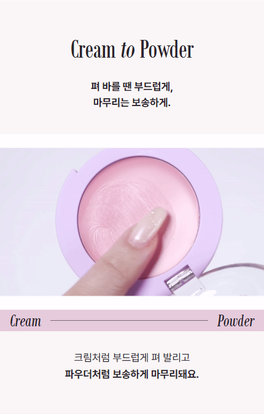

폰트와 장식을 덜어낸 상세페이지
섹션 순서와 제품·발색 사진은 유지하고, 큰 세리프 영문과 이탤릭·흐림 장식·타원·칩을 정리했습니다. 한글 제목을 중심으로 색상명과 제형 설명의 반복도 줄였습니다.
현재 Cafe24 구성 전체 보기 · 기존 레퍼런스 대조
사진 재생성·색상 보정 없음. 검토용 비교이며 실제 쇼핑몰 등록은 보류 상태입니다.
첫 화면
이전 · V8 정리 후 · V9
정리 후 · V9
발색 비교
이전 · V8 정리 후 · V9
정리 후 · V9
얼굴 발색
이전 · V8 정리 후 · V9
정리 후 · V9
크림투파우더
이전 · V8
정리 후 · V9
식물성 오일
이전 · V8 정리 후 · V9
정리 후 · V9
사용법
이전 · V8 정리 후 · V9
정리 후 · V9
비건
이전 · V8 정리 후 · V9
정리 후 · V9